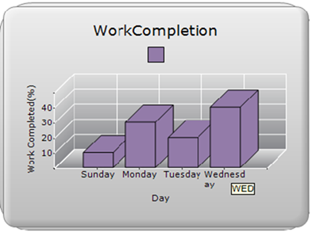

Essential Chart provides tooltip support for ChartAxisLabel. By default ChartAxisLabel will be displayed as tooltip. You can also customize the tooltip to show any content you want.
Use Case Scenarios
If a ChartAxisLabel is too long and truncated, the tooltip for the label will show the full text. You can also show additional information about the ChartAxisLabel.
Adding Tooltip for ChartAxisLabel
To add a tooltip for chart, set the ShowToolTips property to true. By default ChartAxisLabel content will be taken as tooltip content. You can also customize the tooltip content using the ChartFormatAxisLabel event.
The following code illustrates how to add a customized tooltip for ChartAxisLabel:
|
[C#] this.ChartWebControl1.ChartFormatAxisLabel += new ChartFormatAxisLabelEventHandler(ChartWebControl1_ChartFormatAxisLabel); ChartSeries series = new ChartSeries(); series.Points.Add(0, 10); series.Points.Add(1, 30); series.Points.Add(2, 20); series.Points.Add(3, 40);
\\Set labeltext
arr.Add("Sunday"); arr.Add("Monday"); arr.Add("Tuesday"); arr.Add("Wednesday"); arr.Add("Thursday");
\\ Set tooltip content arrt.Add("SUN"); arrt.Add("MON"); arrt.Add("TUE"); arrt.Add("WED"); arrt.Add("THUR");
this.ChartWebControl1.Series.Add(series); this.ChartWebControl1.ShowToolTips = true;
void ChartWebControl1_ChartFormatAxisLabel(object sender, ChartFormatAxisLabelEventArgs e) { int index = (int)e.Value; if (e.AxisOrientation == ChartOrientation.Horizontal) { if (index >= 0 && index < arr.Count) { e.Label = arr[index].ToString(); \\Specify arrTooltip content as chartAxisLabel Tooltip
e.ToolTip = arrt[index].ToString(); } } e.Handled = true; }
|
|
[VB] AddHandler ChartWebControl1.ChartFormatAxisLabel, AddressOf ChartWebControl1_ChartFormatAxisLabel Dim series As ChartSeries = New ChartSeries() series.Points.Add(0, 10) series.Points.Add(1, 30) series.Points.Add(2, 20) series.Points.Add(3, 40)
'Set labeltext arr.Add("Sunday") arr.Add("Monday") arr.Add("Tuesday") arr.Add("Wednesday") arr.Add("Thursday") 'Set tooltip content arrt.Add("SUN") arrt.Add("MON") arrt.Add("TUE") arrt.Add("WED") arrt.Add("THUR")
Me.ChartWebControl1.Series.Add(series) Me.ChartWebControl1.ShowToolTips = True
Private Sub ChartWebControl1_ChartFormatAxisLabel(ByVal sender As Object, ByVal e As ChartFormatAxisLabelEventArgs) Dim index As Integer = CInt(Fix(e.Value)) If e.AxisOrientation = ChartOrientation.Horizontal Then If index >= 0 AndAlso index < arr.Count Then e.Label = arr(index).ToString() 'Specify arrTooltip content as chartAxisLabel Tooltip e.ToolTip = arrt(index).ToString() End If End If e.Handled = True End Sub
|

Figure 257: Customized Tooltip
Refer Also
Customizing Label Text and ToolTip